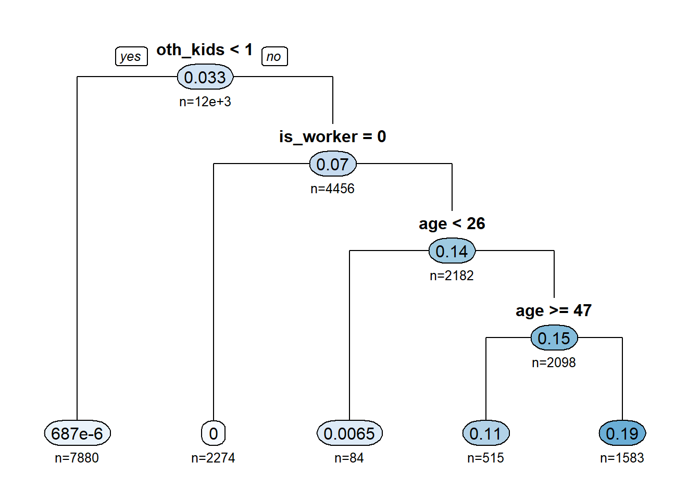
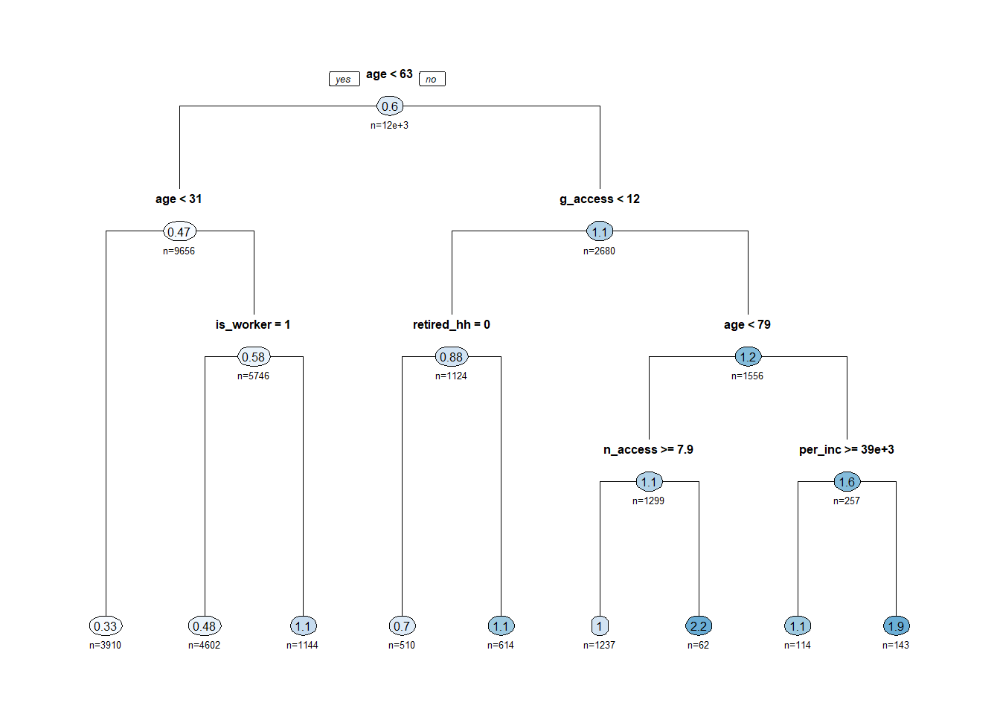
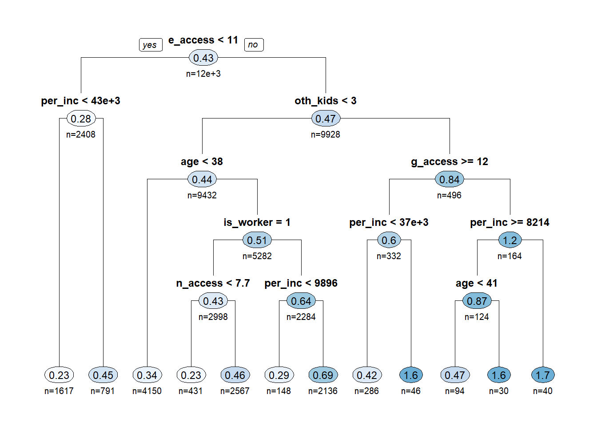

Resident Production Model
Caliper Corporation
March 2, 2021
Introduction
TODO: Add
- We tried GLM (up to and including zero-inflated negative binomial)
- We tried logistic regression
- We explored ML
- We ended up with decision-tree-assisted cross classification
Using DT to guide segmentation
In the trees below, each node lists the average trip rate as well as the percent of the population that node represents. This lets you see the overall average trip rate (top of the tree) and how it changes as you segment the surveyed population.
To save room in the charts, many of the explanatory variables are abbreviated. Their meanings are listed below for reference:
- Person-level variables
- is_worker: if the person is a worker
- is_senior: if the person is >= 65
- is_child: if the person is < 18
- age: person’s age
- gender: Male (1) and Female (2)
- single_parent: if the person is the only adult in a household with children
- Household Variables
- retired_hh: if the household contains only retirees
- per_inc: per-capita income (household income / size)
- oth_ppl: number of other people in the household
- oth_kids: number of other kids in the household
- Zonal variables
- g_access: general accessibility of the person’s home zone
- n_access: nearby accessibility of the person’s home zone
- e_access: employment accessibility of the person’s home zone
TODO: Add prose for each chart after they are finalized
Work Tours
Work
W_HB_W_All
R-squared: 0.363
Other
W_HB_O_All

R-squared: 0.156
K12 Drop Off
W_HB_EK12_All

R-squared: 0.182
Non-Work Tours
K12
N_HB_K12_All

R-squared: 0.534
Shopping/Dining
N_HB_OME_All

R-squared: 0.103
Other (long duration)
N_HB_OD_Long
R-squared: 0.151
Other (short duration)
N_HB_OD_Short

R-squared: 0.101
Medical
N_HB_OMED_All

R-squared: 0.027
Calibration
The table below shows the production model results compared back to the total trips in the survey. Overall, the model performs extremely well even without calibration.
| Trip Type | Observed | Modelled | Difference | %Difference |
|---|---|---|---|---|
| N_HB_K12_All | 578,167 | 569,133 | -9,034 | -2 |
| N_HB_OD_Long | 899,866 | 920,221 | 20,354 | 2 |
| N_HB_OD_Short | 728,483 | 709,869 | -18,614 | -3 |
| N_HB_OME_All | 1,024,381 | 987,549 | -36,833 | -4 |
| N_HB_OMED_All | 116,545 | 100,922 | -15,623 | -13 |
| W_HB_EK12_All | 57,304 | 57,663 | 360 | 1 |
| W_HB_O_All | 287,811 | 289,502 | 1,691 | 1 |
| W_HB_W_All | 767,883 | 787,745 | 19,862 | 3 |
| Total | 4,460,440 | 4,422,603 | -37,837 | -1 |
Caliper Corporation, 2021